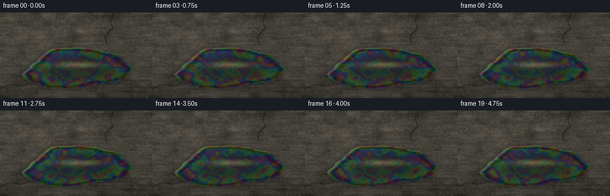
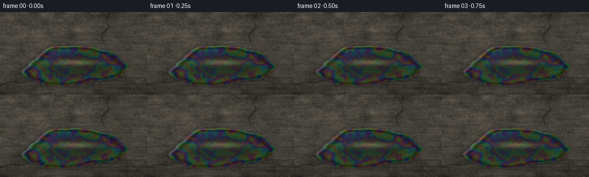
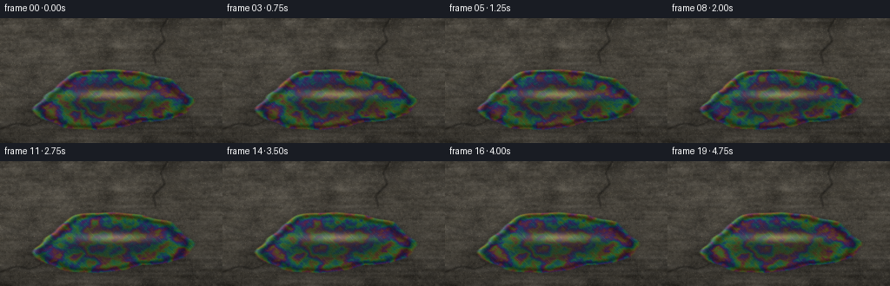
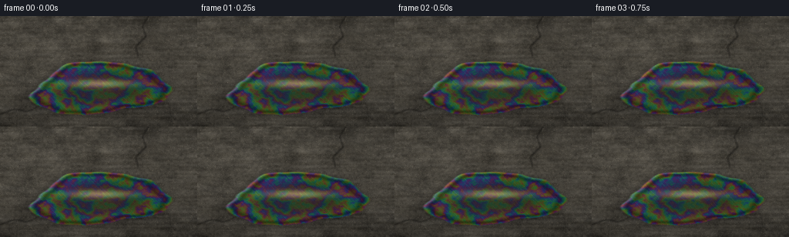

CODING AGENTS AS PIXEL WORLD MODELS
traex/DeepSeek-V4.1-Flash · phygen_081
点击播放 · 原生 RGB 像素
逐轮保存的候选
回放视频、检查图与代码变化。
每份候选均可单独播放。实际图片检查记录在下方工具轨迹中。
候选 01播放与检查图
点击播放 · 原生 RGB 像素


展开代码变化
--- 上一保存版本
+++ 本次保存版本
@@ -0,0 +1,274 @@
+from pathlib import Path
+
+import cv2
+import numpy as np
+from scipy.ndimage import gaussian_filter
+
+import artifact_io
+
+
+CASE_DIR = Path(__file__).resolve().parent
+WIDTH = 256
+HEIGHT = 144
+FRAME_COUNT = 20
+SUPERSAMPLE = 2
+W = WIDTH * SUPERSAMPLE
+H = HEIGHT * SUPERSAMPLE
+
+
+def normalized(array, low=1.0, high=99.0):
+ lo, hi = np.percentile(array, [low, high])
+ return np.clip((array - lo) / (hi - lo + 1e-7), 0.0, 1.0)
+
+
+def smoothstep(edge0, edge1, value):
+ t = np.clip((value - edge0) / (edge1 - edge0 + 1e-7), 0.0, 1.0)
+ return t * t * (3.0 - 2.0 * t)
+
+
+def spectral_layer(rng, sigma, shape=(H, W)):
+ field = gaussian_filter(rng.standard_normal(shape), sigma, mode="reflect")
+ return (field - field.mean()) / (field.std() + 1e-7)
+
+
+def cosine_palette(phase):
+ offsets = np.array([0.00, 0.31, 0.64], dtype=np.float32)
+ return 0.5 + 0.5 * np.cos(2.0 * np.pi * (phase[..., None] + offsets))
+
+
+def draw_crack(canvas, points, thickness):
+ pts = np.rint(np.asarray(points, dtype=np.float32)).astype(np.int32)
+ cv2.polylines(
+ canvas,
+ [pts.reshape(-1, 1, 2)],
+ isClosed=False,
+ color=1.0,
+ thickness=thickness,
+ lineType=cv2.LINE_AA,
+ )
+
+
+def build_static_scene():
+ rng = np.random.default_rng(810281)
+ yy, xx = np.mgrid[0:H, 0:W].astype(np.float32)
+ x = xx / W
+ y = yy / H
+
+ # Sunlight enters from the upper left, warming the asphalt and creating
+ # a soft falloff toward the lower right.
+ sun_distance = ((x - 0.10) / 0.70) ** 2 + ((y + 0.02) / 0.58) ** 2
+ illumination = 0.82 + 0.29 * np.exp(-sun_distance) + 0.06 * (1.0 - y)
+
+ macro = spectral_layer(rng, (32.0, 42.0))
+ medium = spectral_layer(rng, (8.0, 12.0))
+ fine = spectral_layer(rng, (2.0, 2.5))
+ micro = spectral_layer(rng, (0.55, 0.65))
+ worn = spectral_layer(rng, (2.0, 22.0))
+ texture = normalized(0.31 * macro + 0.29 * medium + 0.24 * fine + 0.16 * micro)
+
+ asphalt_color = np.array([76.0, 72.0, 64.0], dtype=np.float32)
+ asphalt = asphalt_color[None, None, :] * (0.72 + 0.48 * texture[..., None])
+ asphalt *= illumination[..., None]
+ asphalt += (worn[..., None] * 3.4)
+
+ # Sparse stone aggregate gives the road a readable, non-uniform surface.
+ stone_seed = rng.random((H, W)).astype(np.float32)
+ light_stones = gaussian_filter((stone_seed > 0.988).astype(np.float32), 0.55)
+ dark_stones = gaussian_filter((stone_seed < 0.018).astype(np.float32), 0.75)
+ asphalt += light_stones[..., None] * np.array([54.0, 49.0, 39.0])
+ asphalt -= dark_stones[..., None] * np.array([30.0, 29.0, 26.0])
+
+ crack = np.zeros((H, W), dtype=np.float32)
+ draw_crack(
+ crack,
+ [
+ (-12, 0.90 * H),
+ (0.07 * W, 0.84 * H),
+ (0.14 * W, 0.86 * H),
+ (0.23 * W, 0.78 * H),
+ (0.31 * W, 0.80 * H),
+ ],
+ max(1, SUPERSAMPLE),
+ )
+ draw_crack(
+ crack,
+ [
+ (0.76 * W, -8),
+ (0.72 * W, 0.09 * H),
+ (0.74 * W, 0.18 * H),
+ (0.69 * W, 0.27 * H),
+ (0.70 * W, 0.37 * H),
+ ],
+ max(1, SUPERSAMPLE),
+ )
+ crack = gaussian_filter(crack, 0.75 * SUPERSAMPLE)
+ crack_lip = np.clip(gaussian_filter(crack, 2.1 * SUPERSAMPLE) - crack, 0.0, 1.0)
+ asphalt *= (1.0 - 0.38 * crack[..., None])
+ asphalt += crack_lip[..., None] * np.array([9.0, 8.0, 7.0])
+
+ # A broad, shallow ellipse in perspective; low angular harmonics keep the
+ # outline organic without making it look like a decorative blob.
+ cx, cy = 0.505 * W, 0.655 * H
+ rx, ry = 0.345 * W, 0.235 * H
+ angle = -0.055
+ ca, sa = np.cos(angle), np.sin(angle)
+ xr = (xx - cx) * ca + (yy - cy) * sa
+ yr = -(xx - cx) * sa + (yy - cy) * ca
+ dx = xr / rx
+ dy = yr / ry
+ theta = np.arctan2(dy, dx)
+ radial = np.sqrt(dx * dx + dy * dy)
+ boundary = (
+ 1.0
+ + 0.078 * np.sin(3.0 * theta + 0.45)
+ + 0.040 * np.sin(5.0 * theta - 1.05)
+ + 0.019 * np.sin(9.0 * theta + 0.70)
+ + 0.011 * np.sin(15.0 * theta - 0.30)
+ )
+ signed_distance = (radial - boundary) * min(rx, ry)
+ mask = 1.0 - smoothstep(-1.8, 1.8, signed_distance)
+ inner_mask = 1.0 - smoothstep(-1.2, 5.0, signed_distance)
+
+ # The asphalt is visibly wet just beyond the oil boundary.
+ halo = gaussian_filter(mask, 5.0 * SUPERSAMPLE)
+ asphalt *= (1.0 - 0.31 * halo[..., None])
+ asphalt -= halo[..., None] * np.array([5.0, 5.0, 4.0])
+
+ thickness_noise = normalized(
+ 0.58 * spectral_layer(rng, (17.0, 25.0))
+ + 0.28 * spectral_layer(rng, (5.0, 8.0))
+ + 0.14 * spectral_layer(rng, (1.7, 2.3))
+ )
+ clipped_radius = np.clip(radial / boundary, 0.0, 1.25)
+ film_base = (
+ 1.10
+ + 1.65 * thickness_noise
+ + 0.80 * clipped_radius
+ + 0.13 * np.sin(4.0 * theta + 0.35)
+ )
+
+ # Warm sky/sun reflection, strongest in a soft band across the puddle.
+ sun_band = np.exp(
+ -(
+ ((x - 0.51) / 0.23) ** 2
+ + ((y - 0.61) / 0.050) ** 2
+ )
+ * 2.2
+ )
+ sky_glow = normalized(spectral_layer(rng, (21.0, 31.0)))
+ reflection = 0.18 + 0.25 * sky_glow + 0.34 * sun_band
+
+ edge_gradient_y, edge_gradient_x = np.gradient(signed_distance)
+ edge_normal = np.sqrt(edge_gradient_x**2 + edge_gradient_y**2) + 1e-6
+ edge_gradient_x /= edge_normal
+ edge_gradient_y /= edge_normal
+ edge_light = np.clip(-0.76 * edge_gradient_x - 0.64 * edge_gradient_y, 0.0, 1.0)
+ edge_ring = np.exp(-(signed_distance / (2.1 * SUPERSAMPLE)) ** 2)
+ rim_shadow = np.exp(-((signed_distance + 3.2 * SUPERSAMPLE) / (2.4 * SUPERSAMPLE)) ** 2)
+
+ vignette = 1.0 - 0.23 * (
+ 1.10 * (x - 0.50) ** 2 + 1.55 * (y - 0.49) ** 2
+ )
+ static_grain = spectral_layer(rng, (0.45, 0.50))
+
+ return {
+ "x": x,
+ "y": y,
+ "theta": theta,
+ "radial": clipped_radius,
+ "mask": mask,
+ "inner_mask": inner_mask,
+ "signed_distance": signed_distance,
+ "asphalt": asphalt,
+ "illumination": illumination,
+ "film_base": film_base,
+ "reflection": reflection,
+ "sun_band": sun_band,
+ "edge_light": edge_light,
+ "edge_ring": edge_ring,
+ "rim_shadow": rim_shadow,
+ "vignette": vignette,
+ "static_grain": static_grain,
+ }
+
+
+def render_frame(scene, frame_index):
+ t = frame_index / FRAME_COUNT
+ x = scene["x"]
+ y = scene["y"]
+ theta = scene["theta"]
+ radial = scene["radial"]
+
+ # Slow, periodic capillary ripples. Keeping one full cycle over five
+ # seconds makes the player's loop visually continuous.
+ wave = (
+ 0.43 * np.sin(2.0 * np.pi * (5.0 * x - 1.8 * y + t))
+ + 0.30 * np.sin(2.0 * np.pi * (8.7 * x + 5.2 * y - t))
+ + 0.19 * np.sin(2.0 * np.pi * (13.3 * x - 7.1 * y + 0.55 * t + 0.20))
+ + 0.11 * np.sin(2.0 * np.pi * (18.0 * x + 10.5 * y - 1.30 * t + 0.65))
+ )
+ wave /= 1.03
+
+ film_phase = (
+ scene["film_base"]
+ + 0.34 * wave
+ + 0.12 * np.sin(2.0 * np.pi * (2.0 * radial + 0.15 * t))
+ )
+ film = cosine_palette(film_phase)
+
+ # Dark oil body with a restrained blue-gray sky reflection and a warmer
+ # specular sun band. The film colors become stronger toward the meniscus.
+ reflection = scene["reflection"]
+ oil = np.empty((H, W, 3), dtype=np.float32)
+ oil[:] = np.array([13.0, 20.0, 18.0], dtype=np.float32)
+ oil += reflection[..., None] * np.array([39.0, 48.0, 49.0])
+ oil += scene["sun_band"][..., None] * np.array([44.0, 31.0, 15.0])
+
+ film_strength = 0.23 + 0.48 * smoothstep(0.35, 1.10, radial)
+ film_strength *= 0.82 + 0.25 * scene["illumination"]
+ oil += film * film_strength[..., None] * 88.0
+
+ # Ripple crests catch the sun as short, changing highlights.
+ gradient_y, gradient_x = np.gradient(wave)
+ directional_slope = 0.68 * gradient_x - 0.74 * gradient_y
+ highlight = np.exp(-((directional_slope - 0.0015) / 0.0035) ** 2)
+ highlight *= 0.34 + 0.66 * scene["sun_band"]
+ highlight *= 0.40 + 0.60 * smoothstep(0.20, 1.10, radial)
+ oil += highlight[..., None] * np.array([88.0, 70.0, 38.0])
+
+ # A narrow warm rim on the sunward edge and a dark inner meniscus provide
+ # the depth cue that makes the puddle sit on the asphalt.
+ oil += scene["edge_light"][..., None] * scene["edge_ring"][..., None] * np.array(
+ [76.0, 58.0, 31.0]
+ )
+ oil *= 1.0 - 0.42 * scene["rim_shadow"][..., None]
+
+ mask = scene["mask"][..., None]
+ image = scene["asphalt"] * (1.0 - mask) + oil * mask
+
+ # Gentle highlight bloom and a stable exposure curve.
+ luminance = image @ np.array([0.2126, 0.7152, 0.0722], dtype=np.float32)
+ bloom_source = np.clip((luminance - 112.0) / 100.0, 0.0, 1.0) ** 2
+ bloom = gaussian_filter(bloom_source, 7.5 * SUPERSAMPLE)
+ image += bloom[..., None] * np.array([23.0, 18.0, 11.0])
+
+ image *= scene["vignette"][..., None]
+ image += scene["static_grain"][..., None] * 2.5
+ image = np.clip(image, 0.0, 255.0)
+
+ image = cv2.resize(
+ image.astype(np.float32),
+ (WIDTH, HEIGHT),
+ interpolation=cv2.INTER_AREA,
+ )
+ return np.clip(image + 0.5, 0.0, 255.0).astype(np.uint8)
+
+
+def main():
+ scene = build_static_scene()
+ frames = np.stack([render_frame(scene, i) for i in range(FRAME_COUNT)])
+ artifact_io.save(frames, CASE_DIR)
+
+
+if __name__ == "__main__":
+ main()
候选 02播放与检查图
点击播放 · 原生 RGB 像素


展开代码变化
--- 上一保存版本
+++ 本次保存版本
@@ -224,17 +224,23 @@
oil += reflection[..., None] * np.array([39.0, 48.0, 49.0])
oil += scene["sun_band"][..., None] * np.array([44.0, 31.0, 15.0])
- film_strength = 0.23 + 0.48 * smoothstep(0.35, 1.10, radial)
+ film_strength = 0.30 + 0.56 * smoothstep(0.35, 1.10, radial)
film_strength *= 0.82 + 0.25 * scene["illumination"]
- oil += film * film_strength[..., None] * 88.0
+ oil += film * film_strength[..., None] * 96.0
# Ripple crests catch the sun as short, changing highlights.
gradient_y, gradient_x = np.gradient(wave)
- directional_slope = 0.68 * gradient_x - 0.74 * gradient_y
- highlight = np.exp(-((directional_slope - 0.0015) / 0.0035) ** 2)
- highlight *= 0.34 + 0.66 * scene["sun_band"]
+ directional_slope = 0.76 * gradient_x - 0.65 * gradient_y
+ highlight = np.exp(-((directional_slope - 0.0010) / 0.0021) ** 2)
+ highlight *= 0.30 + 0.70 * scene["sun_band"]
highlight *= 0.40 + 0.60 * smoothstep(0.20, 1.10, radial)
- oil += highlight[..., None] * np.array([88.0, 70.0, 38.0])
+ oil += highlight[..., None] * np.array([100.0, 79.0, 42.0])
+
+ # A second, broader sun reflection sits on the liquid surface and makes
+ # the dark oil read as glossy rather than as a colored stain.
+ gloss = scene["sun_band"] ** 0.72
+ gloss *= 0.68 + 0.32 * smoothstep(0.20, 1.00, radial)
+ oil += gloss[..., None] * np.array([45.0, 42.0, 31.0])
# A narrow warm rim on the sunward edge and a dark inner meniscus provide
# the depth cue that makes the puddle sit on the asphalt.
可观测工具轨迹
实际执行的命令与返回图片。
命令 1exit 0
/bin/bash -c "pwd && rg --files -g 'prompt.txt' -g 'GENERATION_RULES.md' -g 'task_spec.json' -g '"'!**/.git/**'"'"
命令 2exit 0
/bin/bash -c "ls -la && find . -maxdepth 2 -type f -not -path './.git/*' -printf '%p\\n' | sort | head -200"
命令 3exit 0
/bin/bash -c 'cat prompt.txt'
命令 4exit 0
/bin/bash -c 'cat GENERATION_RULES.md'
命令 5exit 0
/bin/bash -c 'cat task_spec.json'
命令 6exit 0
/bin/bash -c "sed -n '1,240p' artifact_io.py && printf '\\n---PLAYER---\\n' && sed -n '1,240p' player_template.html"
命令 7exit 0
/bin/bash -c "python - <<'PY'
mods=['numpy','PIL','scipy','cv2','skimage']
for m in mods:
try:
mod=__import__(m)
print(m, getattr(mod,'__version__','ok'))
except Exception as e:
print(m, 'MISSING', e)
PY"命令 8exit 0
/bin/bash -c 'git status --short --branch 2>/dev/null || true'
命令 9exit 0
/bin/bash -c 'python generate.py'
命令 10exit 0
/bin/bash -c "python - <<'PY'
from PIL import Image
import numpy as np
for name in ['frames/00.png','frames/10.png','frames/19.png','inspection.png']:
a=np.asarray(Image.open(name).convert('RGB'))
print(name, a.shape, 'mean', np.round(a.mean((0,1)),2), 'std', np.round(a.std((0,1)),2), 'range', (a.min(),a.max()))
PY"命令 11exit 0
/bin/bash -c 'command -v chafa || command -v viu || command -v jp2 || command -v img2txt || command -v convert || true'
命令 12exit 0
/bin/bash -c 'ls -lh frames/*.png pixels.npz index.html inspection.png transition_check.png | tail -30'
命令 13exit 0
/bin/bash -c "python - <<'PY'
from PIL import Image
import numpy as np
im=np.asarray(Image.open('frames/00.png').convert('RGB')).astype(float)
y,x=np.mgrid[:144,:256]
# rough puddle interior ellipse
q=((x-129.3)/88.3)**2+((y-94.3)/33.8)**2
for name,m in [('puddle',q<0.82),('edge',(q>=0.82)&(q<1.08)),('road',q>1.3),('upper',y<45),('bottom',y>120)]:
a=im[m]
print(name, 'pixels',m.sum(),'mean',np.round(a.mean(0),1),'std',np.round(a.std(0),1),'p10/90',np.round(np.percentile(a,[10,90],axis=0),0).tolist())
# brightest pixels
flat=im.reshape(-1,3); idx=np.argsort(flat.mean(1))[-12:]
print('brightest',[(int(i%256),int(i//256),flat[i].astype(int).tolist()) for i in idx[::-1]])
PY"命令 14exit 0
/bin/bash -c "python - <<'PY'
from PIL import Image, ImageOps, ImageEnhance
import numpy as np
im=Image.open('frames/00.png').convert('RGB').resize((64,30), Image.Resampling.LANCZOS)
a=np.asarray(im).astype(float)
# contrast-stretched luminance ascii
l=a@np.array([.2126,.7152,.0722])
l=(l-l.min())/(l.max()-l.min())
chars=' .:-=+*#%@'
for row in l:
print(''.join(chars[min(9,int(v*10))] for v in row))
print('--- chroma category map (R,Y,G,C,B,M,.,low-sat) ---')
mx=a.max(2); mn=a.min(2); sat=mx-mn
# hue
r,g,b=a[:,:,0],a[:,:,1],a[:,:,2]
h=np.zeros_like(r)
m=sat>1e-5
h[m]=np.select([(mx==r)[m],(mx==g)[m]], [((g-b)/sat)[m]%6, ((b-r)/sat)[m]+2], ((r-g)/sat)[m]+4)*60
for yy in range(0,30,2):
s=''
for xx in range(64):
if sat[yy,xx]<12: c='.' if mx[yy,xx]<70 else 'o'
elif h[yy,xx]<30 or h[yy,xx]>=330: c='R'
elif h[yy,xx]<90: c='Y'
elif h[yy,xx]<150: c='G'
elif h[yy,xx]<210: c='C'
elif h[yy,xx]<270: c='B'
else: c='M'
s+=c
print(s)
PY"命令 15exit 0
/bin/bash -c "python - <<'PY'
from PIL import Image
import numpy as np
im=np.asarray(Image.open('frames/00.png').convert('RGB'))
# 48x27 color blocks represented by ANSI truecolor; keeps geometry and chroma legible in terminal
small=np.asarray(Image.fromarray(im).resize((48,27), Image.Resampling.LANCZOS))
for row in small:
print(''.join(f'\\x1b[48;2;{r};{g};{b}m \\x1b[0m' for r,g,b in row))
PY"命令 16exit 0
/bin/bash -c "python - <<'PY'
from PIL import Image
import numpy as np
fr=np.stack([np.asarray(Image.open(f'frames/{i:02d}.png').convert('RGB')).astype(np.float32) for i in range(20)])
d=np.abs(np.diff(fr,axis=0)).mean((1,2,3))
print('adjacent MAE:', np.round(d,2).tolist())
print('mean motion',d.mean(),'max',d.max(),'loop seam',np.abs(fr[0]-fr[-1]).mean())
# Puddle-region temporal signal from rough mask
y,x=np.mgrid[:144,:256]
q=((x-129.3)/88.3)**2+((y-94.3)/33.8)**2
m=q<0.8
for i in [0,5,10,15,19]:
a=fr[i][m]
print(i,'puddle mean',np.round(a.mean(0),1),'sat',round(float((a.max(1)-a.min(1)).mean()),1))
PY"命令 17exit 0
/bin/bash -c "python - <<'PY'
import numpy as np
from PIL import Image, ImageDraw
f=np.asarray(Image.open('frames/00.png').convert('RGB'))
# crop enlarged with subtle grid every 16 px to inspect silhouette
im=Image.fromarray(f).resize((1024,576), Image.Resampling.NEAREST)
d=ImageDraw.Draw(im)
for x in range(0,1025,64): d.line((x,0,x,576), fill=(255,0,0,60), width=1)
for y in range(0,577,64): d.line((0,y,1024,y), fill=(255,0,0,60), width=1)
im.save('.tmp/check.png')
print('saved .tmp/check.png', im.size)
PY"命令 18exit 0
/bin/bash -c "python generate.py && python - <<'PY'
from PIL import Image
import numpy as np
fr=np.stack([np.asarray(Image.open(f'frames/{i:02d}.png').convert('RGB')).astype(np.float32) for i in range(20)])
y,x=np.mgrid[:144,:256]
q=((x-129.3)/88.3)**2+((y-94.3)/33.8)**2
m=q<0.8
print('frame00 mean',np.round(fr[0].mean((0,1)),1),'std',np.round(fr[0].std((0,1)),1))
print('puddle mean',np.round(fr[0][m].mean(0),1),'sat',round(float((fr[0][m].max(1)-fr[0][m].min(1)).mean()),1))
d=np.abs(np.diff(fr,axis=0)).mean((1,2,3))
print('motion min/mean/max',round(float(d.min()),3),round(float(d.mean()),3),round(float(d.max()),3),'loop',round(float(np.abs(fr[0]-fr[-1]).mean()),3))
PY"命令 19exit 0
/bin/bash -c "python - <<'PY'
from PIL import Image
import numpy as np
fr=np.stack([np.asarray(Image.open(f'frames/{i:02d}.png').convert('RGB')).astype(np.float32) for i in range(20)])
y,x=np.mgrid[:144,:256]
q=((x-129.3)/88.3)**2+((y-94.3)/33.8)**2
# compare stable vs moving variance; low ratio means temporal noise dominates
stable=(q>1.35)
print('road temporal MAE',np.abs(np.diff(fr[:,stable],axis=0)).mean())
# hue distribution inside puddle
for idx in [0,5,10,15,19]:
a=fr[idx][q<0.8]
r,g,b=a.T; mx=a.max(1); mn=a.min(1); sat=mx-mn
h=np.zeros(len(a)); valid=sat>8
h[valid]=np.select([(mx==r)[valid],(mx==g)[valid]],[((g-b)/(sat+1e-6))[valid]%6,((b-r)/(sat+1e-6))[valid]+2],((r-g)/(sat+1e-6))[valid]+4)*60
print(idx,'sat p50/p90',np.round(np.percentile(sat,[50,90]),1),'hue bins',np.histogram(h[valid],bins=np.arange(0,361,60))[0].tolist())
PY"命令 20exit 0
/bin/bash -c "python - <<'PY'
from PIL import Image
import numpy as np
im=np.asarray(Image.open('frames/00.png').convert('RGB'))
small=np.asarray(Image.fromarray(im).resize((64,36),Image.Resampling.BOX))
# quantize into nearest representative ANSI palette so the terminal snapshot remains compact
palette=np.array([[0,0,0],[45,43,38],[62,59,52],[75,71,63],[90,86,77],[25,35,40],[45,55,62],[80,75,48],[95,90,55],[120,110,60],[35,65,50],[55,85,62],[25,55,75],[50,60,90],[90,55,80],[120,70,90]],dtype=np.int16)
names=' .:-=+*#%@'
# luminance map plus a second chroma map
l=small@np.array([.2126,.7152,.0722])
l=(l-l.min())/(l.max()-l.min())
chars=' .,:;irsXA253hMHGS#9B&@'
for row in l:
print(''.join(chars[min(len(chars)-1,int(v*len(chars)))] for v in row))
PY"命令 21exit 0
/bin/bash -c "python - <<'PY'
from PIL import Image
import numpy as np
im=np.asarray(Image.open('frames/00.png').convert('RGB')).astype(np.float32)
# crop puddle and make an enlarged perceptual map: each cell maps luminance and hue family
crop=Image.fromarray(im.astype(np.uint8)).crop((32,58,225,130)).resize((96,36),Image.Resampling.LANCZOS)
a=np.asarray(crop).astype(float)
r,g,b=a[:,:,0],a[:,:,1],a[:,:,2]; mx=a.max(2); mn=a.min(2); sat=mx-mn; l=a@np.array([.2126,.7152,.0722])
h=np.zeros_like(r); v=sat>7
h[v]=np.select([(mx==r)[v],(mx==g)[v]],[((g-b)/(sat+1e-6))[v]%6,((b-r)/(sat+1e-6))[v]+2],((r-g)/(sat+1e-6))[v]+4)*60
chars=' .,:;irsXA253hMHGS#9B&@'
for yy in range(a.shape[0]):
s=''
for xx in range(a.shape[1]):
lum=int(np.clip(l[yy,xx]/110*len(chars),0,len(chars)-1))
c=chars[lum]
if sat[yy,xx] < 9: c = ' ' if l[yy,xx]<25 else ('.' if l[yy,xx]<45 else (':' if l[yy,xx]<65 else 'x'))
s+=c
print(s)
PY"命令 22exit 1
/bin/bash -c "python - <<'PY'
from pathlib import Path
import json, wave
import numpy as np
from PIL import Image
spec=json.loads(Path('task_spec.json').read_text())
frames=sorted(Path('frames').glob('*.png'))
assert len(frames)==spec['frames']==20, len(frames)
for p in frames:
with Image.open(p) as im:
assert im.mode=='RGB' and im.size==(spec['width'],spec['height'])
with np.load('pixels.npz') as z:
assert set(z.files)=={'pixels'}
assert z['pixels'].shape==(spec['height'],spec['width'],spec['frames'])
assert z['pixels'].dtype==np.uint32
html=Path('index.html').read_text()
assert 'window.__pixelReady=true' in html and '__DATA__' not in html
assert Path('inspection.png').is_file() and Path('transition_check.png').is_file()
assert not Path('audio.wav').exists()
print('artifact audit: PASS')
print('frames:',len(frames),'size:',spec['width'],'x',spec['height'],'fps:',spec['fps'])
print('pixels tensor:',z['pixels'].shape,'uint32 packed RGB')
print('index.html:',Path('index.html').stat().st_size,'bytes')
PY"命令 23exit 0
/bin/bash -c "python - <<'PY'
from pathlib import Path
import json
import numpy as np
from PIL import Image
spec=json.loads(Path('task_spec.json').read_text())
frames=sorted(Path('frames').glob('*.png'))
assert len(frames)==spec['frames']==20
for p in frames:
with Image.open(p) as im:
assert im.mode=='RGB' and im.size==(spec['width'],spec['height'])
with np.load('pixels.npz') as z:
pixels=z['pixels']
assert set(z.files)=={'pixels'}
assert pixels.shape==(spec['height'],spec['width'],spec['frames'])
assert pixels.dtype==np.uint32
html=Path('index.html').read_text()
assert 'window.__pixelReady=true' in html and '__DATA__' not in html
assert Path('inspection.png').is_file() and Path('transition_check.png').is_file()
assert not Path('audio.wav').exists()
print('artifact audit: PASS')
print('frames:',len(frames),'size:',spec['width'],'x',spec['height'],'fps:',spec['fps'])
print('pixels tensor:',pixels.shape,'uint32 packed RGB')
print('index.html:',Path('index.html').stat().st_size,'bytes')
PY"命令 24exit 0
/bin/bash -c "sha256sum frames/00.png frames/10.png frames/19.png pixels.npz index.html > .tmp/hashes_before.txt && python generate.py && sha256sum frames/00.png frames/10.png frames/19.png pixels.npz index.html > .tmp/hashes_after.txt && diff -u .tmp/hashes_before.txt .tmp/hashes_after.txt && echo 'deterministic regeneration: PASS'"
命令 25exit 0
/bin/bash -c 'git status --short -- . && git diff --stat -- .'
命令 26exit 0
/bin/bash -c 'git check-ignore -v frames/00.png index.html pixels.npz generate.py 2>/dev/null || true && ls -lh generate.py index.html pixels.npz inspection.png'
命令 27exit 0
/bin/bash -c "python - <<'PY'
import ast
from pathlib import Path
src=Path('generate.py').read_text()
ast.parse(src)
assert 'artifact_io.save(frames, CASE_DIR)' in src
print('generate.py syntax and save call: PASS')
PY"保存候选 2 份；完成命令 27 次；可验证图片返回 0 张。原始 API 响应与完整日志保留在本地。